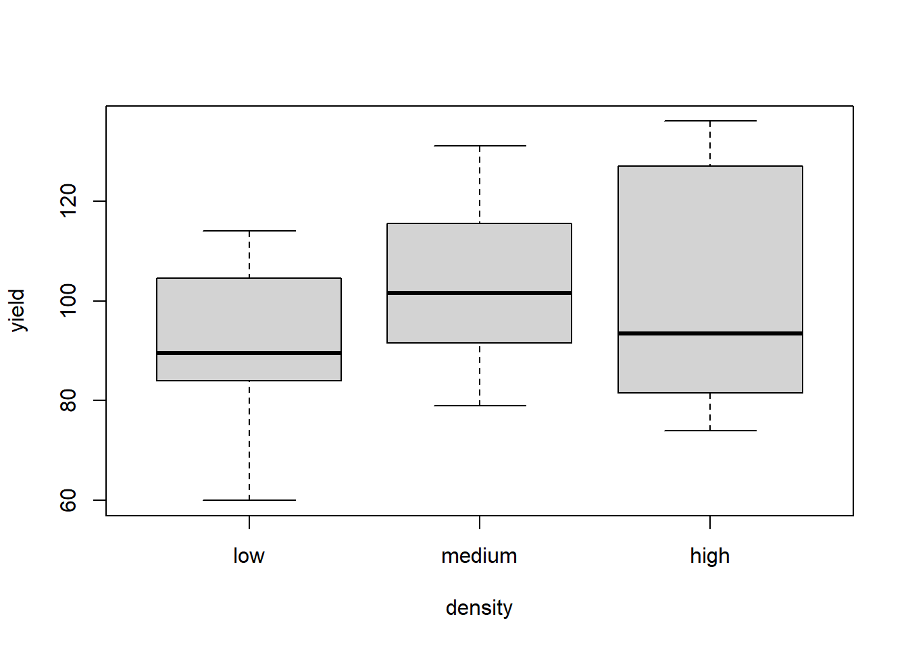
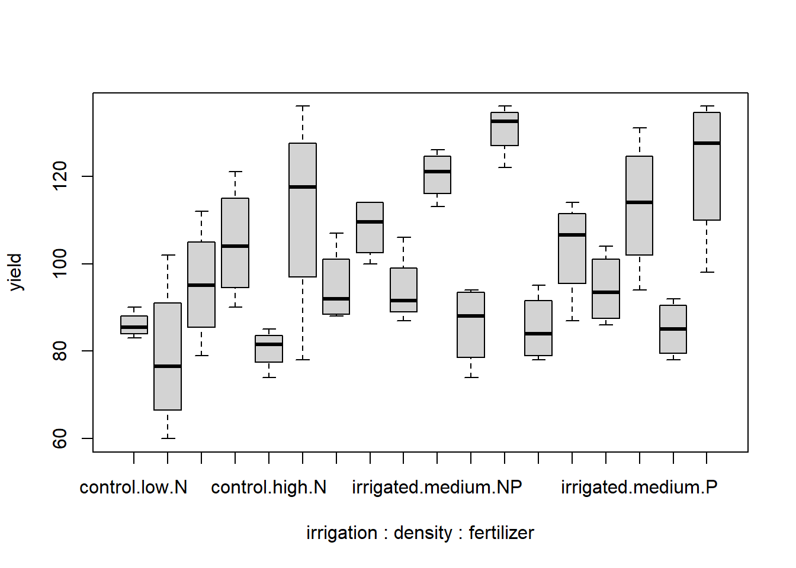
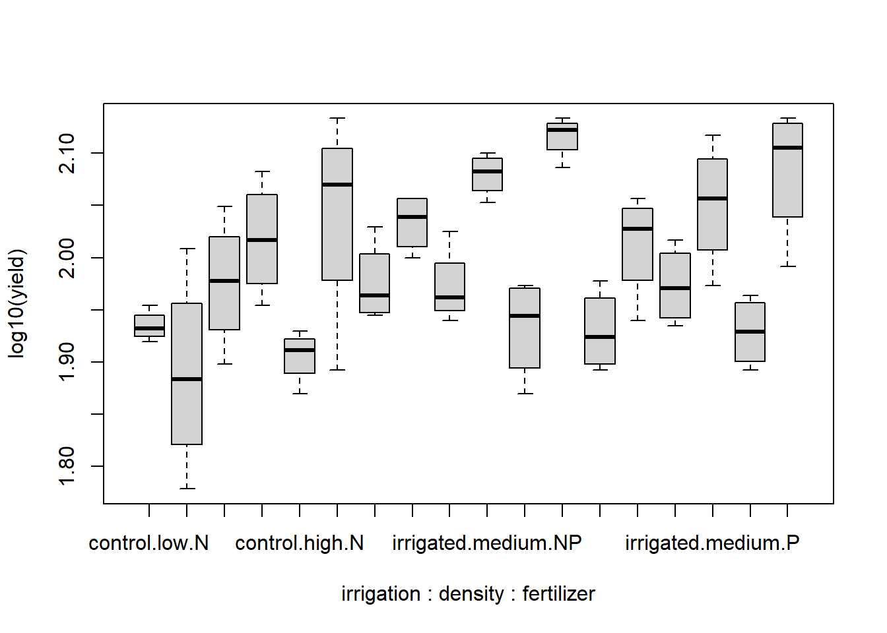
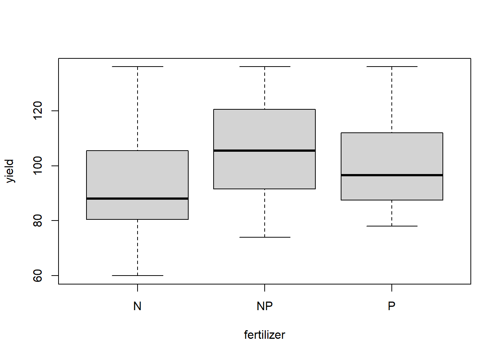
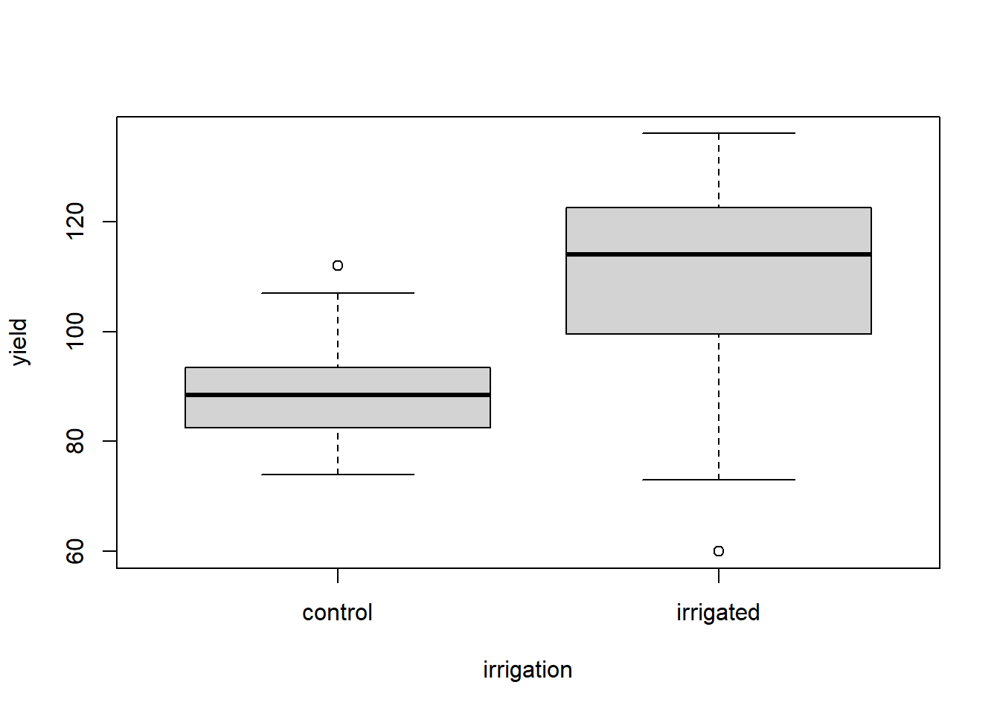
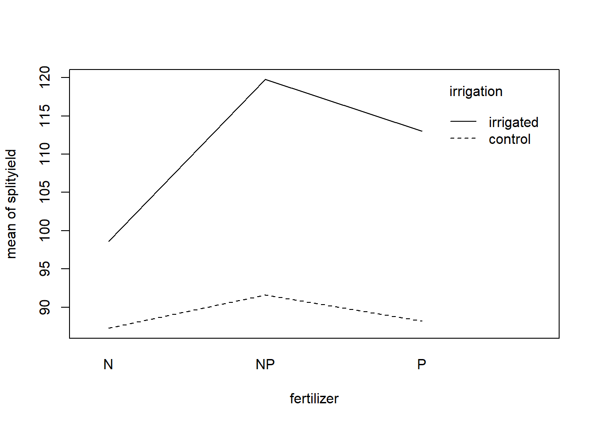
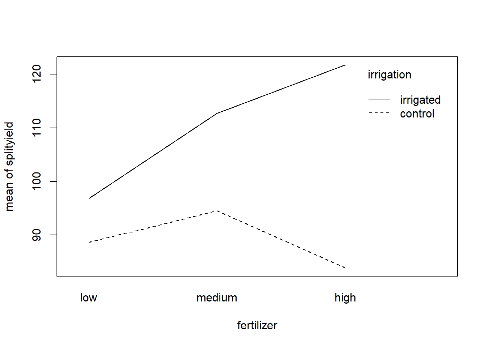

Stat5: Lösung 1
Musterlösung Aufgabe 5.1: Split-plot ANOVA
Übungsaufgabe
(hier so ausführlich formuliert, wie dies auch in der Klausur der Fall sein wird)
- Ladet den Datensatz splityield.csv. Dieser enthält Versuchsergebnisse eines Experiments zum Ernteertrag (yield) einer Kulturpflanze in Abhängigkeit der drei Faktoren Bewässerung (irrigated vs. control), Düngung (N, NP, P) und Aussaatdichten (low, medium, high). Es gab vier ganze Felder (block), die zwei Hälften mit den beiden Bewässerungstreatments (irrigation), diese wiederum drei Drittel für die drei Saatdichten (density) und diese schliesslich je drei Drittel für die drei Düngertreatments (fertilizer) hatten.
- Ermittelt das minimal adäquate statistische Modell, das den Ernteertrag in Abhängigkeit von den angegebenen Faktoren beschreibt.
- Bitte erklärt und begründet die einzelnen Schritte, die ihr unternehmt, um zu diesem Ergebnis zu kommen. Dazu erstellt bitte ein Word-Dokument, in das ihr Schritt für Schritt den verwendeten R-Code, die dazu gehörigen Ausgaben von R, eure Interpretation derselben und die sich ergebenden Schlussfolgerungen für das weitere Vorgehen dokumentieren.
- Dieser Ablauf sollte insbesondere beinhalten:
- Überprüfen der Datenstruktur nach dem Einlesen, welches sind die abhängige(n) und welches die unabängige(n) Variablen
- Explorative Datenanalyse, um zu sehen, ob evtl. Dateneingabefehler vorliegen oder Datentransformationen vorgenommen werden sollten
- Auswahl und Begründung eines statistischen Verfahrens
- Bestimmung des vollständigen/maximalen Models
- Selektion des/der besten Models/Modelle
- Generieren aller Zahlen, Statistiken und Tabellen, die für eine wiss. Ergebnisdarstellung benötigt werden
- Formuliert abschliessend einen Methoden- und Ergebnisteil (ggf. incl. adäquaten Abbildungen) zu dieser Untersuchung in der Form einer wissenschaftlichen Arbeit (ausformulierte schriftliche Zusammenfassung, mit je einem Absatz von ca. 60-100 Worten, resp. 3-8 Sätzen für den Methoden- und Ergebnisteil). D. h. alle wichtigen Informationen sollten enthalten sein, unnötige Redundanz dagegen vermieden werden.
- Abzugeben sind am Ende (a) Ein lauffähiges R-Skript; (b) begründeter Lösungsweg (Kombination aus R-Code, R Output und dessen Interpretation) und (c) ausformulierter Methoden- und Ergebnisteil (für eine wiss. Arbeit).
- Datensatz splityield.csv
- R-Skript als Download
- Lösungstext
Kommentierter Lösungsweg
splityield <- read.delim("data/splityield.csv", sep = ",", stringsAsFactors = T)# Checken der eingelesenen Daten
splityield X yield block irrigation density fertilizer
1 1 90 A control low N
2 2 95 A control low P
3 3 107 A control low NP
4 4 92 A control medium N
5 5 89 A control medium P
6 6 92 A control medium NP
7 7 81 A control high N
8 8 92 A control high P
9 9 93 A control high NP
10 10 80 A irrigated low N
11 11 87 A irrigated low P
12 12 100 A irrigated low NP
13 13 121 A irrigated medium N
14 14 110 A irrigated medium P
15 15 119 A irrigated medium NP
16 16 78 A irrigated high N
17 17 98 A irrigated high P
18 18 122 A irrigated high NP
19 19 83 B control low N
20 20 80 B control low P
21 21 95 B control low NP
22 22 98 B control medium N
23 23 98 B control medium P
24 24 106 B control medium NP
25 25 74 B control high N
26 26 81 B control high P
27 27 74 B control high NP
28 28 102 B irrigated low N
29 29 109 B irrigated low P
30 30 105 B irrigated low NP
31 31 99 B irrigated medium N
32 32 94 B irrigated medium P
33 33 123 B irrigated medium NP
34 34 136 B irrigated high N
35 35 133 B irrigated high P
36 36 132 B irrigated high NP
37 37 85 C control low N
38 38 88 C control low P
39 39 88 C control low NP
40 40 112 C control medium N
41 41 104 C control medium P
42 42 91 C control medium NP
43 43 82 C control high N
44 44 78 C control high P
45 45 94 C control high NP
46 46 60 C irrigated low N
47 47 104 C irrigated low P
48 48 114 C irrigated low NP
49 49 90 C irrigated medium N
50 50 118 C irrigated medium P
51 51 113 C irrigated medium NP
52 52 119 C irrigated high N
53 53 122 C irrigated high P
54 54 136 C irrigated high NP
55 55 86 D control low N
56 56 78 D control low P
57 57 89 D control low NP
58 58 79 D control medium N
59 59 86 D control medium P
60 60 87 D control medium NP
61 61 85 D control high N
62 62 89 D control high P
63 63 83 D control high NP
64 64 73 D irrigated low N
65 65 114 D irrigated low P
66 66 114 D irrigated low NP
67 67 109 D irrigated medium N
68 68 131 D irrigated medium P
69 69 126 D irrigated medium NP
70 70 116 D irrigated high N
71 71 136 D irrigated high P
72 72 133 D irrigated high NPMan sieht, dass das Design vollkommen balanciert ist, d.h. jede Kombination irrigation density fertilizer kommt genau 4x vor (in jedem der vier Blöcke A-D einmal).
str(splityield)'data.frame': 72 obs. of 6 variables:
$ X : int 1 2 3 4 5 6 7 8 9 10 ...
$ yield : int 90 95 107 92 89 92 81 92 93 80 ...
$ block : Factor w/ 4 levels "A","B","C","D": 1 1 1 1 1 1 1 1 1 1 ...
$ irrigation: Factor w/ 2 levels "control","irrigated": 1 1 1 1 1 1 1 1 1 2 ...
$ density : Factor w/ 3 levels "high","low","medium": 2 2 2 3 3 3 1 1 1 2 ...
$ fertilizer: Factor w/ 3 levels "N","NP","P": 1 3 2 1 3 2 1 3 2 1 ...summary(splityield) X yield block irrigation density fertilizer
Min. : 1.00 Min. : 60.00 A:18 control :36 high :24 N :24
1st Qu.:18.75 1st Qu.: 86.00 B:18 irrigated:36 low :24 NP:24
Median :36.50 Median : 95.00 C:18 medium:24 P :24
Mean :36.50 Mean : 99.72 D:18
3rd Qu.:54.25 3rd Qu.:114.00
Max. :72.00 Max. :136.00 splityield$density <- ordered(splityield$density, levels = c("low", "medium", "high"))
splityield$density [1] low low low medium medium medium high high high low
[11] low low medium medium medium high high high low low
[21] low medium medium medium high high high low low low
[31] medium medium medium high high high low low low medium
[41] medium medium high high high low low low medium medium
[51] medium high high high low low low medium medium medium
[61] high high high low low low medium medium medium high
[71] high high
Levels: low < medium < highMan sieht, dass die Variable yield metrisch ist, während die vier anderen Variablen schon korrekt als kategoriale Variablen (factors) kodiert sind
# Explorative Datenanalyse (auf Normalverteilung, Varianzhomogenität)
boxplot(yield~fertilizer, data = splityield)
boxplot(yield~irrigation, data = splityield)
boxplot(yield~density, data = splityield)
boxplot(yield~irrigation * density * fertilizer, data = splityield)



Die Boxplots sind generell hinreichend symmetrisch, so dass man davon ausgehen kann, dass keine problematische Abweichung von der Normalverteilung vorliegt. Die Varianzhomogenität sieht für den Gesamtboxplot sowie für fertilizer und density bestens aus, für irrigation und für die 3-fach-Interaktion deuten sich aber gewisse Varianzheterogenitäten an, d. h. die Boxen (Interquartil-Spannen) sind deutlich unterschiedlich lang. Da das Design aber vollkommen „balanciert“ war, wie wir von oben wissen, sind selbst relativ stark divergierende Varianzen nicht besonders problematisch. Der Boxplot der Dreifachinteraktion zeigt zudem, dass grössere Varianzen (~Boxen) mal bei kleinen, mal bei grossen Mittelwerten vorkommen, womit wir bedenkenlos weitermachen können (Wenn die grossen Varianzen immer bei grossen Mittelwerten aufgetreten wären, hätten wir eine log- oder Wurzeltransformation von yield in Betracht ziehen müssen).
boxplot(log10(yield)~irrigation * density * fertilizer, data = splityield)# bringt keine Verbesserung
aov.1 <- aov(yield~irrigation * density * fertilizer + Error(block/irrigation/density), data = splityield)
Das schwierigste an der Analyse ist hier die Definition des Splitt-Plot ANOVA-Modells. Hier machen wir es mit der einfachsten Möglichkeit, dem aov-Befehl. Um diesen richtig zu spezifieren, muss man verstanden haben, welches der „random“-Faktor war und wie die „fixed“ factors ineinander geschachtelt waren. In diesem Fall ist block der random Faktor, in den zunächst irrigation und dann density geschachtelt sind (die unterste Ebene fertilizer muss man nicht mehr angeben, da diese in der nächsthöheren nicht repliziert ist).
(Übrigens: das simple 3-faktorielle ANOVA-Modell aov(yield~irrigationdensityfertilizer,data=splityield) würde unterstellen, dass alle 72 subplot unabhängig von allen anderen angeordnet sind, also nicht in Blöcken. Man kann ausprobieren, wie sich das Ergebnis mit dieser Einstellung unterscheidet)
summary(aov.1)
Error: block
Df Sum Sq Mean Sq F value Pr(>F)
Residuals 3 194.4 64.81
Error: block:irrigation
Df Sum Sq Mean Sq F value Pr(>F)
irrigation 1 8278 8278 17.59 0.0247 *
Residuals 3 1412 471
---
Signif. codes: 0 '***' 0.001 '**' 0.01 '*' 0.05 '.' 0.1 ' ' 1
Error: block:irrigation:density
Df Sum Sq Mean Sq F value Pr(>F)
density 2 1758 879.2 3.784 0.0532 .
irrigation:density 2 2747 1373.5 5.912 0.0163 *
Residuals 12 2788 232.3
---
Signif. codes: 0 '***' 0.001 '**' 0.01 '*' 0.05 '.' 0.1 ' ' 1
Error: Within
Df Sum Sq Mean Sq F value Pr(>F)
fertilizer 2 1977.4 988.7 11.449 0.000142 ***
irrigation:fertilizer 2 953.4 476.7 5.520 0.008108 **
density:fertilizer 4 304.9 76.2 0.883 0.484053
irrigation:density:fertilizer 4 234.7 58.7 0.680 0.610667
Residuals 36 3108.8 86.4
---
Signif. codes: 0 '***' 0.001 '**' 0.01 '*' 0.05 '.' 0.1 ' ' 1Wir bekommen p-Werte für die drei Einzeltreatments, die drei 2-fach-Interaktionen und die 3- fach Interaktion. Keinen p-Wert gibt es dagegen für block, da dieser als „random“ Faktor spezifiziert wurde. Signifikant sind für sich genommen irrigation und fertilizer sowie die Interaktionen irrigation:density und irrigation:fertilizer.
# Modelvereinfachung
aov.2 <- aov(yield ~ irrigation + density + fertilizer + irrigation:density +
irrigation:fertilizer + density:fertilizer + Error(block/irrigation/density), data = splityield)
summary(aov.2)
Error: block
Df Sum Sq Mean Sq F value Pr(>F)
Residuals 3 194.4 64.81
Error: block:irrigation
Df Sum Sq Mean Sq F value Pr(>F)
irrigation 1 8278 8278 17.59 0.0247 *
Residuals 3 1412 471
---
Signif. codes: 0 '***' 0.001 '**' 0.01 '*' 0.05 '.' 0.1 ' ' 1
Error: block:irrigation:density
Df Sum Sq Mean Sq F value Pr(>F)
density 2 1758 879.2 3.784 0.0532 .
irrigation:density 2 2747 1373.5 5.912 0.0163 *
Residuals 12 2788 232.3
---
Signif. codes: 0 '***' 0.001 '**' 0.01 '*' 0.05 '.' 0.1 ' ' 1
Error: Within
Df Sum Sq Mean Sq F value Pr(>F)
fertilizer 2 1977 988.7 11.828 9.21e-05 ***
irrigation:fertilizer 2 953 476.7 5.703 0.00662 **
density:fertilizer 4 305 76.2 0.912 0.46639
Residuals 40 3344 83.6
---
Signif. codes: 0 '***' 0.001 '**' 0.01 '*' 0.05 '.' 0.1 ' ' 1aov.3 <- aov(yield ~ irrigation + density + fertilizer + irrigation:density +
irrigation:fertilizer+ Error(block/irrigation/density), data = splityield)
summary(aov.3)
Error: block
Df Sum Sq Mean Sq F value Pr(>F)
Residuals 3 194.4 64.81
Error: block:irrigation
Df Sum Sq Mean Sq F value Pr(>F)
irrigation 1 8278 8278 17.59 0.0247 *
Residuals 3 1412 471
---
Signif. codes: 0 '***' 0.001 '**' 0.01 '*' 0.05 '.' 0.1 ' ' 1
Error: block:irrigation:density
Df Sum Sq Mean Sq F value Pr(>F)
density 2 1758 879.2 3.784 0.0532 .
irrigation:density 2 2747 1373.5 5.912 0.0163 *
Residuals 12 2788 232.3
---
Signif. codes: 0 '***' 0.001 '**' 0.01 '*' 0.05 '.' 0.1 ' ' 1
Error: Within
Df Sum Sq Mean Sq F value Pr(>F)
fertilizer 2 1977 988.7 11.924 7.28e-05 ***
irrigation:fertilizer 2 953 476.7 5.749 0.00605 **
Residuals 44 3648 82.9
---
Signif. codes: 0 '***' 0.001 '**' 0.01 '*' 0.05 '.' 0.1 ' ' 1Jetzt muss man nur noch herausfinden, wie irrigation und fertilizer wirken und wie die Interaktionen aussehen. Bei multiplen ANOVAs macht man das am besten visuell:
# Visualisierung der Ergebnisse
boxplot(yield~fertilizer, data = splityield)
boxplot(yield~irrigation, data = splityield)
interaction.plot(splityield$fertilizer, splityield$irrigation, splityield$yield,
xlab= "fertilizer", ylab = "mean of splityield", trace.label = "irrigation")
interaction.plot(splityield$density, splityield$irrigation, splityield$yield,
xlab= "fertilizer", ylab = "mean of splityield", trace.label = "irrigation")


